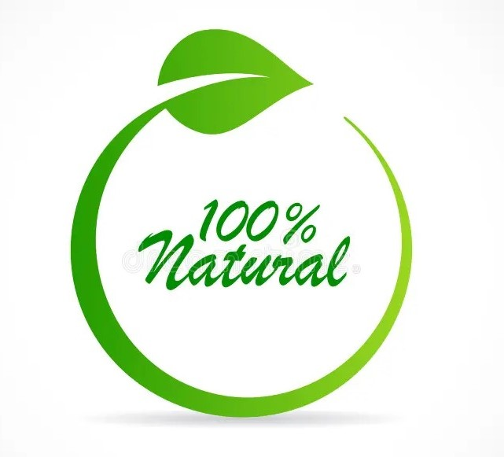

The Origins of the Idukki's Best Cardamom & Spices
Ayur Spices pioneered its order for the premium cardamom and spices they provide...

The Ayur Spices brand provides the best spices to their customers. Our first-class grading processes ensure that we deliver only the best quality spices.
Ensuring the Best Quality
We make it a priority to ensure our products meet the highest quality standards, verified by customer feedback.

Cardamom, often called the "Queen of Spices," is a highly aromatic spice. Our best products guarantee satisfaction for our customers.
More Than Just Cardamom
Ayur Spices is renowned for providing high-quality spices across Idukki.
We offer a wide range of premium spices, providing our customers with quality and competitive prices.
Certified as Idukki's Best Cardamom
